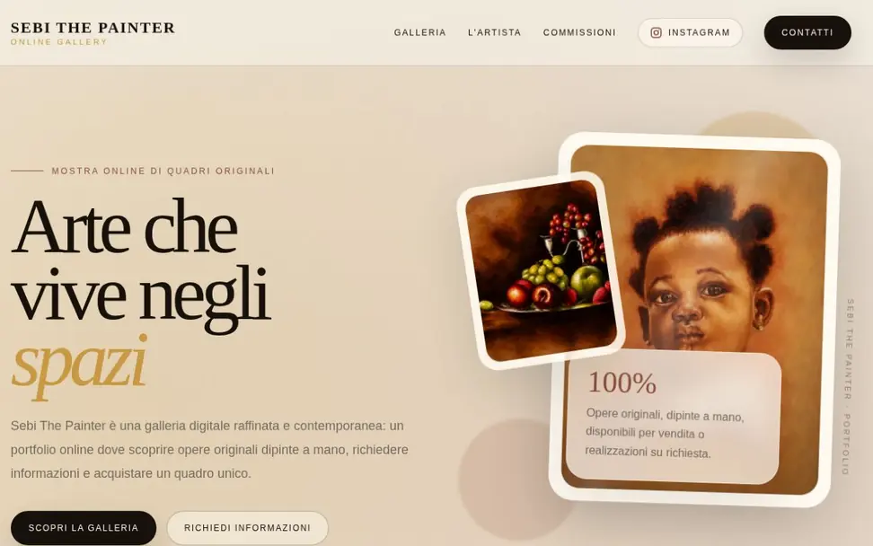

Non hai ancora un sito?
Presenta la tua attività con un sito dedicato: servizi, lavori, informazioni e contatti, organizzati per chi ti cerca.
+ Realizzazione, restyling e aggiornamento siti web
Realizzo siti web per presentare la tua attività, mostrare servizi e lavori e permettere ai clienti di contattarti. Creo siti nuovi, rinnovo quelli esistenti e progetto anche esperienze animate e immersive.
Vuoi vedere come potrebbe essere il tuo sito? Richiedi GRATIS una demo della pagina iniziale, personalizzata per la tua attività e senza obbligo di acquisto.
Presenta la tua attività con un sito dedicato: servizi, lavori, informazioni e contatti, organizzati per chi ti cerca.
Rivedo grafica, contenuti e navigazione di un sito esistente, con attenzione alla lettura e all’utilizzo su smartphone.
Aggiungo pagine, aggiorno testi e immagini e valuto nuove funzioni. Definiamo insieme l’intervento di cui hai bisogno.
Un sito essenziale per spiegare cosa fai oppure un’esperienza visiva con animazioni e interazioni: scegliamo la soluzione in base alla tua attività, ai contenuti e al pubblico che vuoi raggiungere.
Per chi vuole presentarsi online in modo ordinato e professionale: pagine dedicate ai servizi, galleria dei lavori, contatti e richieste di informazioni.
Per raccontare un brand o un prodotto attraverso immagini, animazioni e interazioni. Un progetto visivo personalizzato, con contenuti e navigazione pensati anche per il telefono.
ONVYRA è il mio studio personale di progettazione e sviluppo web. Lavoro con professionisti, attività locali, piccoli brand e aziende che vogliono creare il proprio sito o rinnovarlo.
Seguo personalmente ogni fase del progetto: analisi delle esigenze, proposta visiva, sviluppo e pubblicazione. Puoi confrontarti direttamente con chi realizza il sito, con obiettivi, attività e costi concordati prima di procedere.
Parliamone · 389 826 7838Una prima proposta della pagina iniziale per valutare lo stile e l’organizzazione dei contenuti del tuo nuovo sito.
+ Il nostro metodo
La demo ti permette di valutare l’aspetto della pagina iniziale prima di commissionare il sito completo. Se scegli di proseguire, definiamo insieme contenuti, funzionalità, tempi e preventivo.
Descrivi la tua attività, il pubblico a cui ti rivolgi e cosa vuoi ottenere dal sito: presentare i servizi, mostrare i lavori o ricevere richieste di contatto.
Progetto GRATIS un’anteprima della pagina iniziale, con una proposta di stile e organizzazione dei contenuti pensata per la tua attività.
Puoi decidere liberamente se proseguire. Prima dello sviluppo ricevi un preventivo con le pagine, le funzionalità e le attività concordate.
Sviluppo le pagine e le funzioni previste, curando la navigazione, l’adattamento a smartphone e tablet e la leggibilità dei contenuti.
Preparo la pubblicazione e verifico i collegamenti e le funzioni del sito. Aggiornamenti e assistenza successivi possono essere inclusi in un accordo dedicato.
Esplora i siti pubblicati e le proposte dimostrative. Ogni progetto mostra un diverso modo di organizzare i contenuti e rappresentare l’identità dell’attività.
Apri ogni progetto e guarda direttamente il sito completo.

Mostra digitale per un artista privato: opere originali, galleria, racconto dell’artista e richieste di informazioni.
Visita il sitoSito aziendale per una realtà attiva nel fotovoltaico, nell’impiantistica e nell’edilizia, con servizi, simulatore e richiesta preventivo.
Visita il sitoPiattaforma per leggere lo scenario XAU/USD con aggiornamenti periodici, risultati, storico e grafici.
Visita il sitoProposte dimostrative per mostrare stili, settori e linguaggi diversi.
I siti pubblicati si aprono in una nuova scheda. I concept ONVYRA hanno identità immaginarie e mostrano possibili direzioni creative.
Progettazione e sviluppo di un sito nuovo: struttura delle pagine, direzione grafica, integrazione dei contenuti e pubblicazione, con un layout adatto anche al mobile.
Riorganizzo contenuti, navigazione e grafica di un sito esistente, preservando gli elementi utili e intervenendo sui punti da migliorare.
Posso aggiungere pagine, aggiornare contenuti e sviluppare nuove funzioni. Attività, tempi e modalità di assistenza vengono definiti in base alle esigenze del progetto.
Progetto esperienze visive con animazioni, interazioni e scene tridimensionali, mantenendo attenzione alla chiarezza dei contenuti e alla facilità di utilizzo.
La prima demo della pagina iniziale: una proposta visiva per capire stile e direzione del sito, senza impegno. La realizzazione del sito completo è un lavoro successivo, su preventivo.
Dipende da pagine, contenuti, funzioni e livello di personalizzazione. Prima di procedere ricevi un preventivo con il perimetro del lavoro e i costi concordati.
I tempi vengono concordati dopo aver definito il progetto e verificato i contenuti disponibili. Non sono uguali per un sito essenziale e un’esperienza immersiva.
Per cominciare bastano una descrizione dell’attività, l’obiettivo e qualche riferimento. Per il sito completo definiamo insieme testi, logo, fotografie, contatti e materiali necessari.
Nel preventivo viene specificato cosa è incluso e quali servizi hanno eventuali costi periodici. Possiamo prevedere anche aggiornamenti e assistenza; proprietà, accessi e consegna vengono concordati prima dello sviluppo.
Non hai alcun obbligo di acquistare il sito completo. Puoi fermarti oppure discutere una direzione diversa. Eventuali revisioni vengono concordate insieme.
+ Raccontaci cosa vuoi realizzare
GRATISRaccontami la tua attività e cosa vorresti ottenere dal sito. Ti ricontatto per approfondire la richiesta e concordare la demo della pagina iniziale. Il sito completo viene realizzato solo dopo l’accettazione del preventivo.
Pagina iniziale personalizzata. Nessun obbligo di acquisto.389 826 7838Scrivimi su WhatsApp